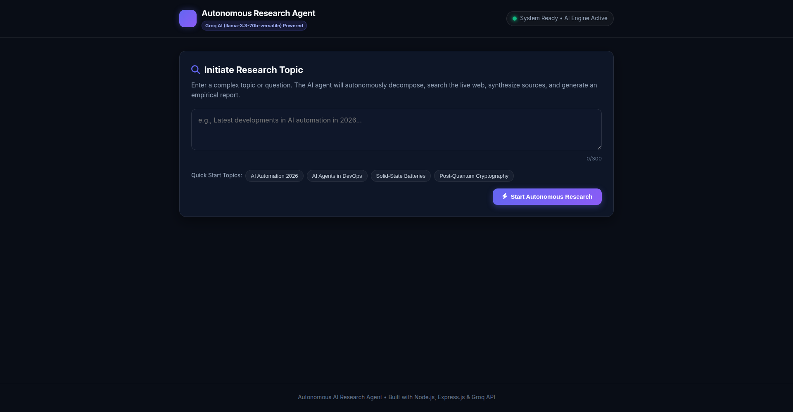

01
AI Research
Production

AI Engine Active
Autonomous Research Agent
Autonomous research system — enter any topic and the agent decomposes it into targeted queries, scrapes live web data across 3 search tiers, and synthesizes a cited Markdown report via LLM reasoning, with real-time progress tracking.
Node.js
Express
Groq AI
Web Scraping
[+] View System Spec›
Search Tiers:DuckDuckGo → Bing → Wikipedia
AI Reasoning:Groq LLM
Output:Cited Markdown report + export